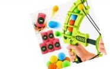
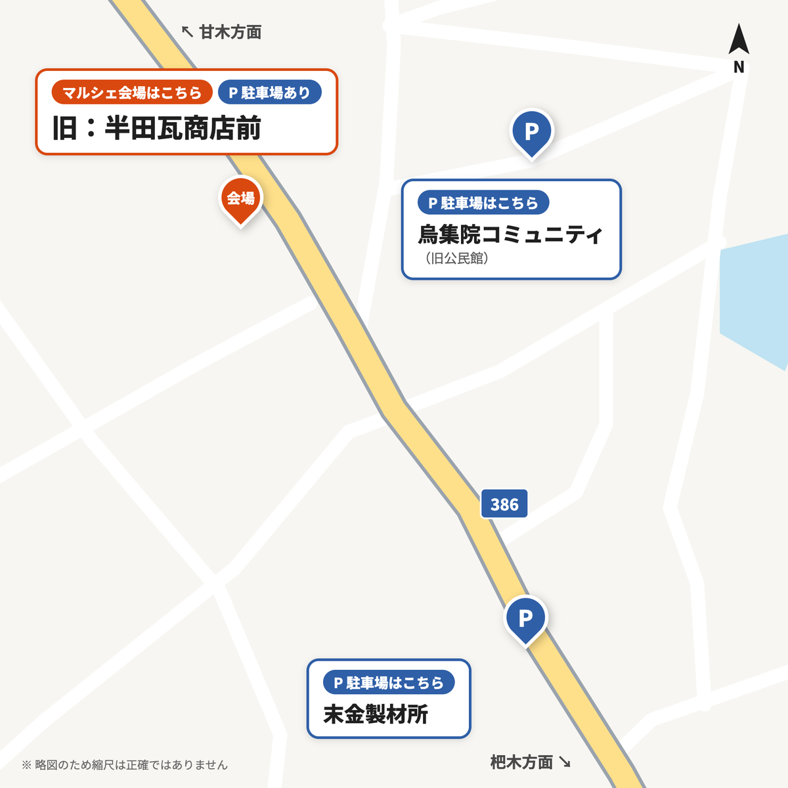

- いつ？
- 12月6日 日曜日
2026年 / 10:00〜16:00 - どこで？
- 旧 半田瓦商店跡地
国道386号線沿い - 車で行ける？
- 駐車場は3か所
アクセス・駐車場を見る
きょうの「すき」を見つけよう
なにから、楽しむ？
おなかも、こころも、いっぱいになる一日。

子どもたちも、主役！ちいさな手で、わくわく体験
「やってみたい！」が
見つかる場所。
キッズコーナーでは、ストラップ制作などのお楽しみをご用意。お買いものの合間に、親子で遊びにきてくださいね。
体験コーナーを見てみる屋外会場・体験③ ／ 内容はお店の詳細でご確認くださいお店をめぐって、いい出会い。
25のお店で、待っています。
気になるお店をタップして、のぞいてみてね。
全25件を表示中
写真のあるお店はタップで詳細へ。Instagramもチェックできます。
- 1トルテ パン・シフォンパン、シフォン
- 2アジアン屋台スープカレー
- 3たこ焼き三ちゃんたこ焼き
- 4パンチェッタピザ・パスタ
- 5天野商店高校生とのコラボカレーボン酢
- 6朝倉マルシェ果樹蔵明太フランス・パスタ
- 7No.130+タコドック
- 8フリースペースよつば焼き芋
- 9mimi coffee珈琲
- 10にしよりカフェクレープ
- 11おむすび米ピOMUSUBI米ピ
- 1RingwithPLUsCA小物＆アクセサリー
- 2遠矢さん手作りバッグ
- 3塩川さんパラコードキーホルダー
- 4yakko.base手作り作品
- 5石井さん雑貨・小物
- 6恵華（けいか）心の書
- 7りえ＆ひとみ服・雑貨・靴
- 8ヨッちゃんマーケット手作り雑貨
体験コーナー
3件野菜・米・植物
その他3件- 1烏集院の野菜・米稲葉
- 2多肉植物嘉悦
- 3二宮さん家のナスビ二宮
該当する出店者が見つかりませんでした。
別のキーワードで探してみてください。
別のキーワードで探してみてください。
アクセス・駐車場
国道386号線沿いです。駐車場は3か所あります。

- 旧：半田瓦商店前マルシェ会場。駐車場もあります
- 烏集院コミュニティ旧公民館の駐車場
- 末金製材所国道386号線沿い、杷木方面寄り
※略図のため縮尺は正確ではありません
会場マップ
番号は出店者一覧の番号と同じです。画像をタップすると大きく見られます。


出店・協賛の募集
前回は200人以上が来場し、朝倉一円から親子連れの皆さまにお越しいただきました。